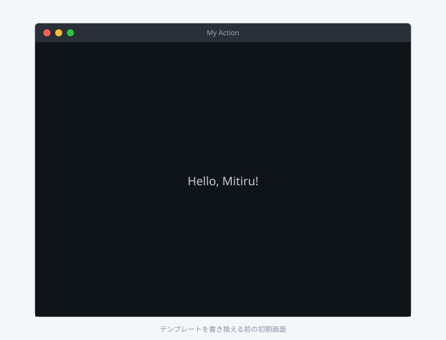
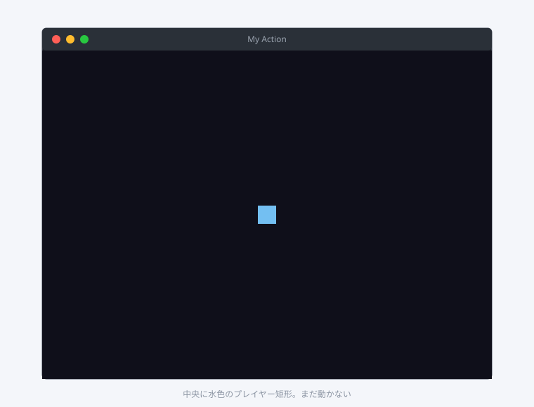
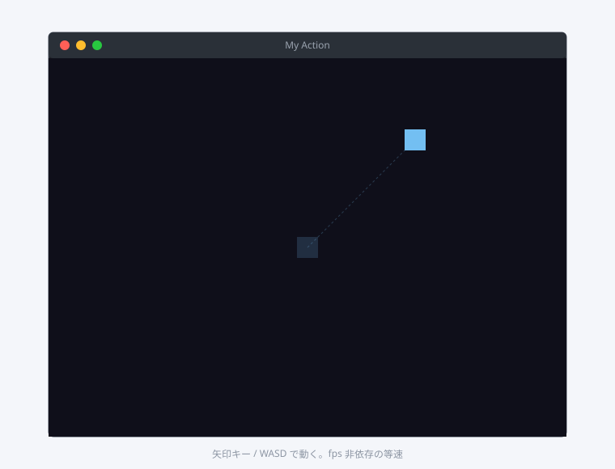

「画面の上で何かを動かす」を、純 C++ だけで作るチュートリアルです。HTML も JS もこの段階では出てきません。MitiruEngine の標準的な作り方は「ゲームの中身は C++」なので、まずはここから入るのが順当です。
時間の目安は 20 〜 30 分。事前に はじめに を済ませ、mitiru doctor が OK を返すことを確認してください。
できあがるもの
- 黒い背景の上に動く矩形プレイヤー (32 × 32 px)
- 矢印キー か WASD で 4 方向に移動
- 画面の端を超えない (壁との当たり判定)
- 小さい黄色い円を 1 個出して、触れたら得点 +1 + 別の場所に再配置
- 左上にスコア表示

手順 1: ひな型を作る
純 C++ のプロトタイプなので、CEF を切った最小テンプレートを使います。
mitiru new --template native-only my-action
cd my-action
native-only テンプレートは assets/scene.html を含みません。CEF プロセスも起動せず、起動が 1 秒未満になります。

手順 2: そのまま走らせて確認
中身を書き換える前に、一度走らせて初期状態を見ます。
mitiru run
初回は engine を取得して CMake configure が走るので 1 〜 2 分かかります。2 回目以降は秒で立ち上がります。

ウィンドウのタイトルやサイズを変えたければ mitiru.toml の [window] を編集します。
[window]
title = "My Action"
width = 800
height = 600
vsync = true
mitiru run をもう一度叩くと、変えた設定で開き直します。
手順 3: プレイヤーを置く
src/main.cpp を開いて、矩形プレイヤーを表示するだけの最小コードに書き換えます。
#include <mitiru/Mitiru.hpp>
class Player {
public:
float x = 384.0f;
float y = 284.0f;
static constexpr float kSize = 32.0f;
};
class MyGame final : public mitiru::Game {
public:
mitiru::Size layout(int w, int h) override { return {w, h}; }
void update(float dt) override {
(void)dt;
}
void draw(mitiru::Screen& s) override {
const float w = static_cast<float>(s.width());
const float h = static_cast<float>(s.height());
s.drawRect({0, 0, w, h}, {0.06f, 0.06f, 0.10f, 1.0f}); // 背景
s.drawRect({m_player.x, m_player.y, Player::kSize, Player::kSize},
{0.45f, 0.75f, 0.95f, 1.0f}); // プレイヤー
}
private:
Player m_player;
};
int main() {
mitiru::Engine engine;
MyGame game;
mitiru::EngineConfig cfg;
cfg.title = "My Action";
cfg.windowWidth = 800;
cfg.windowHeight = 600;
cfg.enableCef = false;
cfg.fontAtlasRanges = mitiru::EngineConfig::FontAtlas::Latin;
engine.run(game, cfg);
}
ここまでで分かること:
Gameを継承してupdate(dt)とdraw(Screen&)を埋めるのが基本形。- 描画は
Screen::drawRect(rect, color)のように C++ の関数を呼ぶ だけ。HTML も JS もいらない。 - 色は RGBA 0.0 〜 1.0 の
Colorf。RGB の感覚で書ける。
mitiru run で確認:

手順 4: 動かす
update(dt) でキー入力を見て位置を進めます。
void update(float dt) override {
const float speed = 240.0f; // px / sec
const auto& in = input();
if (in.isKeyDown(mitiru::Key::ArrowLeft) || in.isKeyDown(mitiru::Key::A)) m_player.x -= speed * dt;
if (in.isKeyDown(mitiru::Key::ArrowRight) || in.isKeyDown(mitiru::Key::D)) m_player.x += speed * dt;
if (in.isKeyDown(mitiru::Key::ArrowUp) || in.isKeyDown(mitiru::Key::W)) m_player.y -= speed * dt;
if (in.isKeyDown(mitiru::Key::ArrowDown) || in.isKeyDown(mitiru::Key::S)) m_player.y += speed * dt;
}
ポイント:
update(dt)は毎フレーム呼ばれ、dtには前フレームからの経過秒が入ります。speed * dtで動かすと、フレームレートに依存しない一定速度になります (60Hz でも 144Hz でも同じ速さ)。isKeyDownは 押されているあいだ ずっと true。一回押した瞬間だけ欲しい場合はisKeyJustPressedを使います。
mitiru run し直すと、キーで矩形が動くようになっています。

手順 5: 画面の端でぶつかる
このままだと画面外まで行ってしまうので、update の末尾で位置をクランプします。
void update(float dt) override {
// (上のキー入力処理はそのまま)
const float maxX = 800.0f - Player::kSize;
const float maxY = 600.0f - Player::kSize;
if (m_player.x < 0) m_player.x = 0;
if (m_player.x > maxX) m_player.x = maxX;
if (m_player.y < 0) m_player.y = 0;
if (m_player.y > maxY) m_player.y = maxY;
}
これだけで「壁との当たり判定」になります。プロトタイプ段階の衝突はだいたいこのレベルで足りる、というのも覚えておくといいです。
手順 6: 目標を出してスコアを足す
目標 (黄色い円) とスコアを追加します。クラスのメンバに目標とスコアを足し、update で接触判定、draw で円とテキストを出します。
#include <mitiru/Mitiru.hpp>
#include <random>
#include <cstdio>
class MyGame final : public mitiru::Game {
public:
mitiru::Size layout(int w, int h) override { return {w, h}; }
void onStart() override {
respawnTarget();
}
void update(float dt) override {
const float speed = 240.0f;
const auto& in = input();
if (in.isKeyDown(mitiru::Key::ArrowLeft) || in.isKeyDown(mitiru::Key::A)) m_x -= speed * dt;
if (in.isKeyDown(mitiru::Key::ArrowRight) || in.isKeyDown(mitiru::Key::D)) m_x += speed * dt;
if (in.isKeyDown(mitiru::Key::ArrowUp) || in.isKeyDown(mitiru::Key::W)) m_y -= speed * dt;
if (in.isKeyDown(mitiru::Key::ArrowDown) || in.isKeyDown(mitiru::Key::S)) m_y += speed * dt;
m_x = std::clamp(m_x, 0.0f, 800.0f - kSize);
m_y = std::clamp(m_y, 0.0f, 600.0f - kSize);
// 矩形 (プレイヤー) と円 (目標) の中心距離で当たり判定
const float cx = m_x + kSize * 0.5f;
const float cy = m_y + kSize * 0.5f;
const float dx = cx - m_targetX;
const float dy = cy - m_targetY;
if (dx * dx + dy * dy < (kSize * 0.5f + 14.0f) * (kSize * 0.5f + 14.0f)) {
++m_score;
respawnTarget();
}
}
void draw(mitiru::Screen& s) override {
const float w = static_cast<float>(s.width());
const float h = static_cast<float>(s.height());
s.drawRect({0, 0, w, h}, {0.06f, 0.06f, 0.10f, 1.0f});
s.drawCircle({m_targetX, m_targetY}, 14.0f, {1.0f, 0.85f, 0.30f, 1.0f});
s.drawRect({m_x, m_y, kSize, kSize}, {0.45f, 0.75f, 0.95f, 1.0f});
char buf[32];
std::snprintf(buf, sizeof(buf), "Score: %d", m_score);
s.drawTextInRect(buf, {16, 12, 200, 24}, {1, 1, 1, 1});
}
private:
void respawnTarget() {
static std::mt19937 rng{std::random_device{}()};
std::uniform_real_distribution<float> rx(40.0f, 760.0f), ry(40.0f, 560.0f);
m_targetX = rx(rng);
m_targetY = ry(rng);
}
static constexpr float kSize = 32.0f;
float m_x = 384.0f, m_y = 284.0f;
float m_targetX = 0.0f, m_targetY = 0.0f;
int m_score = 0;
};
int main() {
mitiru::Engine engine;
MyGame game;
mitiru::EngineConfig cfg;
cfg.title = "My Action";
cfg.windowWidth = 800;
cfg.windowHeight = 600;
cfg.enableCef = false;
cfg.fontAtlasRanges = mitiru::EngineConfig::FontAtlas::Latin;
engine.run(game, cfg);
}
mitiru run で動作確認:

何が分かったか
Game::update(dt)とGame::draw(Screen&)の 2 つに C++ だけで ゲームの中身が書ける。- 入力 / 状態 / 描画は別レイヤーじゃなく、同じクラスのメソッドとして並ぶ。プロトタイプ段階ではこれで充分。
- HTML / CSS / JS は このチュートリアルでは 1 行も書いていない。MitiruEngine の標準形はこの方向です。
CEF (HTML / CSS) は HUD やメニューの 見た目 を凝りたくなったときに使います。それは 02 画面に UI を出す で扱います。
次の一歩
- プレイヤーを 画像 にする:
Screen::drawSpriteに置き換える。 - 時間制限 を入れる:
Game::onStartで開始時刻を覚え、updateで残り時間を計算、drawで表示。 - シーン遷移: タイトル → ゲーム → 結果の 3 シーンに分けたい場合は
SceneRouterを使います。examples/hello_scene/が短い実例です。